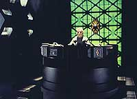
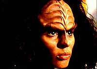
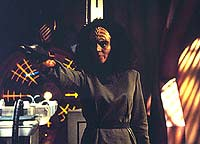
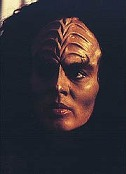
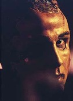

|
MANCHETE
DO EPISDIO
Roteiristas
dividem B'Elanna em duas
para fazer estudo da personagem
Episdio
anterior | Prximo
episdio
Sinopse:
Data Estelar: 48784.2.
 Quando
um grupo avanado composto por Paris, Torres e o tenente Durst
perde o contato com a Voyager, Chakotay, Kim e Tuvok se transportam
para o planeta onde a equipe estava trabalhando. Chakotay os detecta
em algumas cavernas, mas no consegue ultrapassar o campo de fora
Vidiian que bloqueia a passagem.
Em um laboratrio subterrneo, um
cientista Vidiian chamado Sulan extraiu material gentico de Torres
para criar uma verso inteiramente Klingon dela. Ele espera
encontrar uma cura para a mortal "fagia" que assola a sua
raa, uma doena gentica degenerativa. Mas o seu interesse em
Torres no puramente cientfico e ela logo percebe isso.
 Presos
em outra cela Vidiian, Paris e Durst se surpreendem quando outra
prisioneira trazida. uma verso totalmente humana de Torres -
a outra "metade" que sobrou quando Sulan removeu o
material gentico Klingon. Os guardas retornam e removem Durst da
cela, enquanto Paris tenta, sem sucesso, ajudar o amigo.
Quando Sulan volta para visitar a
Torres Klingon, ela fica espantada ao ver o rosto de Durst nele. Ele
matou o tenente e implantou o rosto do cadver sobre o seu na
esperana de parecer mais atraente a ela. Mas, enraivecida, ela
arrebenta os laos que a mantinham presa, ataca Sulan e foge do
laboratrio.
 Paris
e a Torres humana so encaminhados a um campo de trabalho, mas
quando ela fica exausta volta para a priso. L, a sua contraparte
a encontra e a ajuda a escapar. A humana inventa um plano para
desativar os defletores de toda a instalao, o que permitiria que
a Voyager os transportasse a bordo. As duas Torres chegam
concluso de que cada uma tem qualidades nicas que contribuem
para o ser inteiro.
Disfarado de Vidiian, Chakotay
resgata Paris e eles reunem as duas Torres. Quando esto para se
transportar para a nave, Sulan atira e a Torres Klingon salta a
frente para salvar a humana. Ela morre quando chega na Voyager, mas
o Doutor consegue usar o seu DNA Klingon ara restaurar a Torres
original.
Comentrios:
"Faces" soube recuperar muito bem a espcie
dos Vidiians (aliengenas introduzidos em "Phage"),
aproveitando o embalo para aprofundar a anlise da personalidade
conflitante e a guerra interior existente entre as duas heranas
genticas de B'Elanna Torres.
 Mesmo
que a dvida e os questionamentos perdurem at o final, fica claro
que cada uma de suas metades (humana e Klingon) tm integridade,
graa, esprito e fora. Ela conseguiu crescer e aprender em uma
situao que teria feito muitos se desesperarem.
E o que ela descobre que sua capacidade nica est na combinao
de suas duas metades, mesma descoberta feita pelo capito Kirk,
quando dividido em dois por um defeito do transporte, como visto em "The
Naked Time".
B'Elanna lembra muito Kira Nerys, durante os primeiros dias de Deep
Space Nine, quando a major tentava conciliar seu passado como
terrorista e seu futuro como oficial da paz.
Colocar B'Elanna e Tom Paris "no
mesmo barco" durante este episdio foi uma opo
inteligente. Os dois tm passados similares: trados e abandonados
pelos pais (um fsica e o outro psicologicamente), e ambos deixaram
a Frota para se juntar aos maquis.
 A
interao entre Tom e a B'Elanna humana foi adorvel e o modo
como ele atuou como um oficial superior naquela misso, exigindo
ser levado para uma possvel morte no lugar de Durst, foi
sensacional. Aparentemente, a f de Janeway nele justificvel.
Entretanto, no fica claro por que a
B'Elanna Klingon aceitaria a ideologia dos Klingons com relao
honra e fora. Afinal, ela apenas tinha a fisiologia. Ainda
assim, a interao entre as duas personalidades foi muito
interessante e Roxann Dawson interpretou muito bem uma fmea dessa
raa de guerreiros.
A boa anlise da personagem, a capacidade de entretenimento
injetada no episdio e a boa recuperao dos Vidiians como viles
faz deste um dos melhores episdios da primeira temporada de Voyager,
embora toda a tecnologia criada para contar a histria seja, no mnimo,
fantasiosa.
Citaes:
B'Elanna Klingon - "Why
not let your creature out of her harness? Study her in action?"
("Por que no deixar sua criatura fora de seu cativeiro? Estud-la
em ao?")
B'Elanna Klingon - "I'm sorry I can't replicate you a souffl."
("Desculpe se eu no posso replicar um sufl pra voc.")
Trivia:
 O diretor deste episdio, Winrich Kolbe,
o mesmo do episdio-piloto, "Caretaker"
("O Guardio"), alm do episdio final da Nova Gerao,
"All Good Things...".
O diretor deste episdio, Winrich Kolbe,
o mesmo do episdio-piloto, "Caretaker"
("O Guardio"), alm do episdio final da Nova Gerao,
"All Good Things...".
O conceito deste episdio estava
praticamente descartado mas foi ressuscitado por Ken Biller quando
ele passou a fazer parte do time de produo de Voyager.
"Um dos problemas com a histria, era que teramos que bolar
uma maneira de dividir B'Elanna em duas sem forarmos demais para
os telespectadores", diz Biller. "Eu logo imaginei em
utilizar os Vidiians (vistos em "Phage")
para fazer isto acontecer, pois eles tm a tecnologia vivel, e ao
final o episdio acabou transformado em uma verso de "A Bela
e a Fera" no quadrante Delta."
Ficha
tcnica:
Histria de Jonathan Glassner e
Adam Grossman
Roteiro de Kenneth Biller
Dirigido por Winrich Kolbe
Exibido em 08/05/1995
Produo: 014
Elenco:
Kate Mulgrew como
Kathryn Janeway
Robert Beltran como Chakotay
Roxann Biggs-Dawson como B'Elanna Torres
Robert Duncan McNeill como Tom Paris
Jennifer Lien como Kes
Ethan Phillips como Neelix
Robert Picardo como Doutor
Tim Russ como Tuvok
Garrett Wang como Harry Kim
Elenco convidado:
Brian Markinson como Sulan
Rob LaBelle como o prisioneiro Talaxiano
Barton Tinapp como um guarda
Episdio
anterior | Prximo
episdio
|